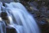

Danh lam thắng cảnh Đà Lạt, Lâm Đồng

Hồ Suối Vàng
Hồ Suối Vàng gồm hai hồ là Dankia ở trên và Ankroet ở dưới, được tạo bởi hai đập cùng tên Ankroet
Hồ Suối Vàng gồm hai hồ là Dankia ở trên và Ankroet ở dưới, được tạo bởi hai đập cùng tên Ankroet
Hồ Xuân Hương
Hồ Xuân Hương nguyên là thung lũng có dòng suối Cam Ly chảy qua, nơi quy tụ của các cư dân Lạch buổi ban đầu
Hồ Xuân Hương nguyên là thung lũng có dòng suối Cam Ly chảy qua, nơi quy tụ của các cư dân Lạch buổi ban đầu

Hồ Tuyền Lâm
Hồ nằm cách Ðà Lạt 5km, gọn gàng giữa rừng thông mênh mông và dòng suối tía huyền thoại
Hồ nằm cách Ðà Lạt 5km, gọn gàng giữa rừng thông mênh mông và dòng suối tía huyền thoại
Hồ Than
Thở
Hồ Than Thở nằm trên đồi cao giữa một rừng thông tĩnh mịch. Cảnh vật quanh hồ nên thơ, mặt nước hồ luôn phẳng lặng
Hồ Than Thở nằm trên đồi cao giữa một rừng thông tĩnh mịch. Cảnh vật quanh hồ nên thơ, mặt nước hồ luôn phẳng lặng

Thác Pongour
Thác Pongour là một ngọn thác nổi tiếng đẹp mơ màng, hùng vĩ, hoang dã nhất của Nam Tây Nguyên
Thác Pongour là một ngọn thác nổi tiếng đẹp mơ màng, hùng vĩ, hoang dã nhất của Nam Tây Nguyên
Thác Cam Ly
Ngọn thác hùng vĩ gắn với quang cảnh của các đồi thông bao quanh đã tạo nên một thắng cảnh khó quên
Ngọn thác hùng vĩ gắn với quang cảnh của các đồi thông bao quanh đã tạo nên một thắng cảnh khó quên

Thác Voi
Thác nước gắn liền với sự tích về mối tình thủy chung, bi tráng này đã được công nhận là di tích thắng cảnhQG
Thác nước gắn liền với sự tích về mối tình thủy chung, bi tráng này đã được công nhận là di tích thắng cảnhQG

Thác
Hang Cọp
Thác Hang Cọp cách thành phố Đà Lạt 15 km về hướng Đông, Tiếng thác va vào đá phát ra âm thanh như tiếng cọp gầm
Thác Hang Cọp cách thành phố Đà Lạt 15 km về hướng Đông, Tiếng thác va vào đá phát ra âm thanh như tiếng cọp gầm

Thác Đamb'ri
Có độ cao khoảng 60m. Mùa mưa, nước thượng nguồn đổ về ầm ầm, đi xa vài kilômét còn nghe thấy tiếng
Có độ cao khoảng 60m. Mùa mưa, nước thượng nguồn đổ về ầm ầm, đi xa vài kilômét còn nghe thấy tiếng
Thác Pernn
Con đường xuống thác thật đẹp với những bậc đá ôm theo sườn đồi được bố trí một cách hợp lý
Con đường xuống thác thật đẹp với những bậc đá ôm theo sườn đồi được bố trí một cách hợp lý